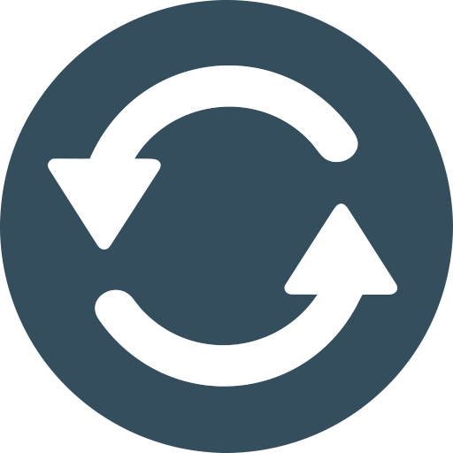
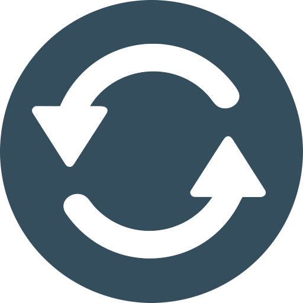

Partes de la vía:
El objetivo de esta actividad es lograr que puedas reconocer las partes que componen una vía, dado que sobre estas partes se ubican las señales de tránsito que aprenderemos más adelante. Presiona sobre los puntos naranja para conocer las partes.
 
